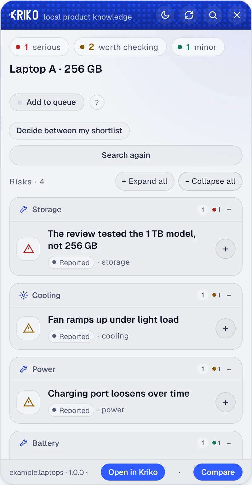
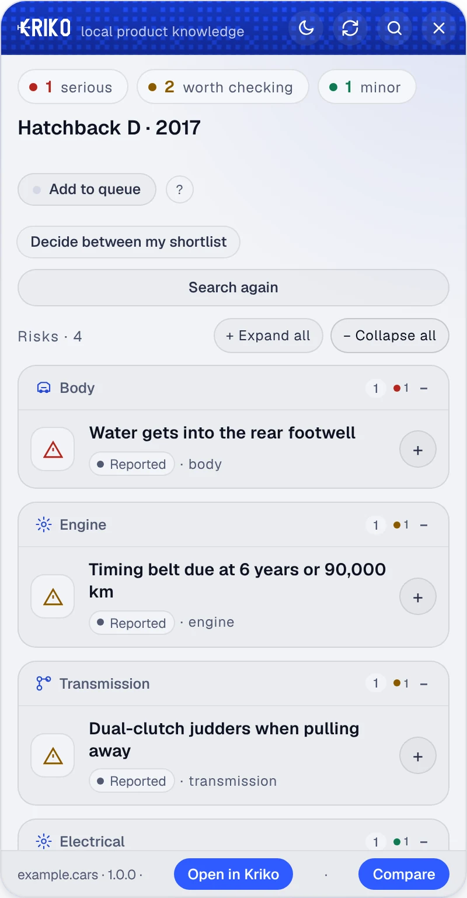
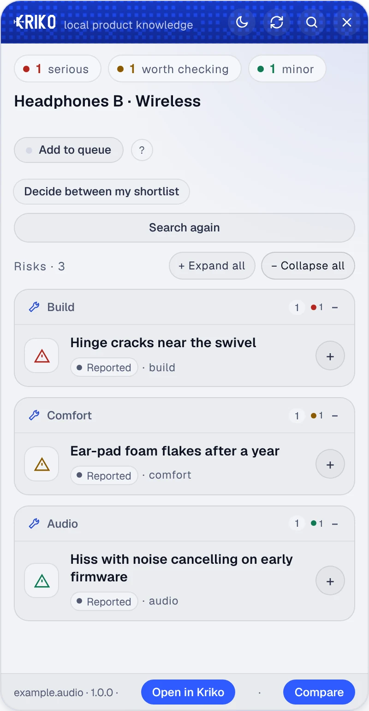
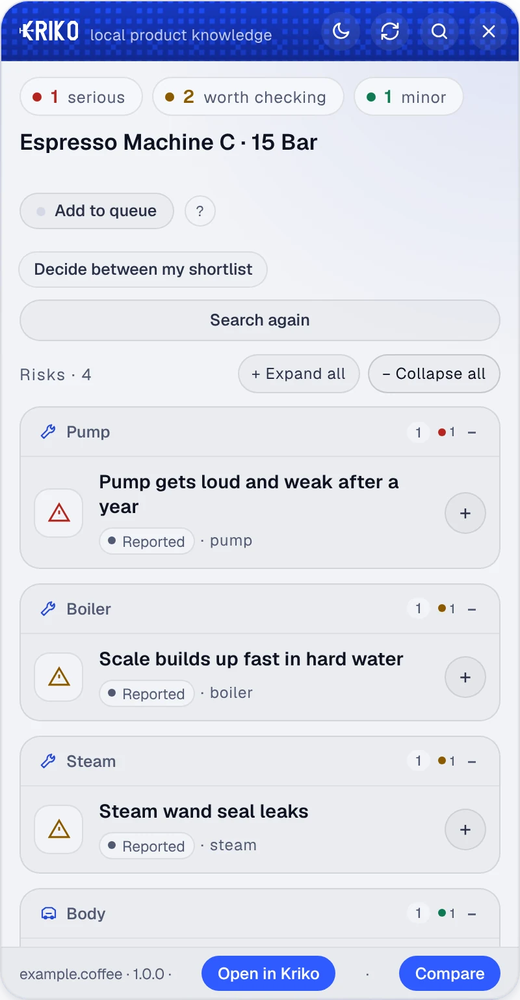

Find what you did not know to ask
The listing tells half the story.
Kriko shows what is known to go wrong with the exact product on the page you are reading. Every finding keeps the source it came from.
Free · Open source · No account

- A source beside every finding
- Your research stays on your computer
- Free and open source
01How it works
What happens when you open a listing.
-
01
You open a product page.
Kriko reads the listing on your computer and looks that exact product up in the catalogs you installed. Nothing about the page is sent to Kriko.

-
02
It shows what is known to go wrong.
Each finding says how serious it is, how well it is supported and what to ask or check. Open one to read the source it came from.

-
03
If nobody has written it down, your agent looks.
When no catalog knows the product, your own AI agent researches it and the result is saved with its sources. If it finds nothing, Kriko says it found nothing. It never says the product is fine.


02Examples
Four invented products, in the real panel.
Nothing here is real, not the products and not the findings. They only show how the panel reads, new or used. Real findings link to a real source.
-
Used · Hatchback

Hatchback D, 2017
A damp carpet and a service interval worth asking about.
-
New · Laptop
Laptop A, 256 GB
The review tested a bigger drive than the one in the basket.
-
New · Headphones

Headphones B
A crack near the swivel, and what to check before it matters.
-
New · Coffee machine

Espresso machine C
A pump that tires and a boiler that scales.
The panel is in English for now. The Turkish site describes it in Turkish.
03Known models
Know the model before the test drive.
A catalog is one product category, written down with its sources. The Cars catalog covers engines, gearboxes, electrics and bodywork, in English and Turkish. Install it from Catalogs in the app and lookups work offline.
04Everything else
Ask your own agent to look.
Quick look sends the agent you chose to research a product no catalog covers, and keeps the sources. It needs an internet connection. Free if your agent is free; a paid provider bills your own account.
05Install
Four steps, once.
- 01
Install the app.
Download the Windows installer and open Kriko. It needs no administrator rights. The first-start setup walks you through the rest.
- 02
Add knowledge.
Open Catalogs, choose Find release catalogs and install one. You can also research without one.
- 03
Add Kriko to your browser.
Open More, then Set up Kriko, and press Prepare browser extension. Follow the steps for Chrome, Edge or Brave.
- 04
Open a listing.
Keep Kriko running, open a product page and press Alt + K or the toolbar button. Read the findings and follow the sources.
Kriko for Windows
64-bit Windows. Desktop app and browser extension.
Get the Windows installerChoose the setup .exe file on the latest release page. The installer is not code-signed yet, so Windows may show a SmartScreen warning.
Prefer a portable version? Choose the .zip.
On macOS or Linux? See the source build options.
06Questions
Your data, the cost and the limits.
Where does my research live?
On your computer. Catalogs, history and settings stay with you, and there is no account to create. Online research sends your question and the pages it read to the provider you choose. Read the privacy policy for every case.
What is the catch?
Kriko is free and open source under the MIT license. Catalog lookups need no key. If you choose a paid AI provider for research, that provider bills your own account.
Can I check new products too?
Yes. New and used products both have problems that are easy to miss: owner reports, repair findings and concerns that only affect one variant. Quick look researches beyond your installed catalogs with your chosen agent.
What if a concern is not confirmed?
A report can point at something worth checking without proving a defect. Follow the pages behind it, compare the explanations and see what is still unanswered. You decide what the evidence means for your purchase.